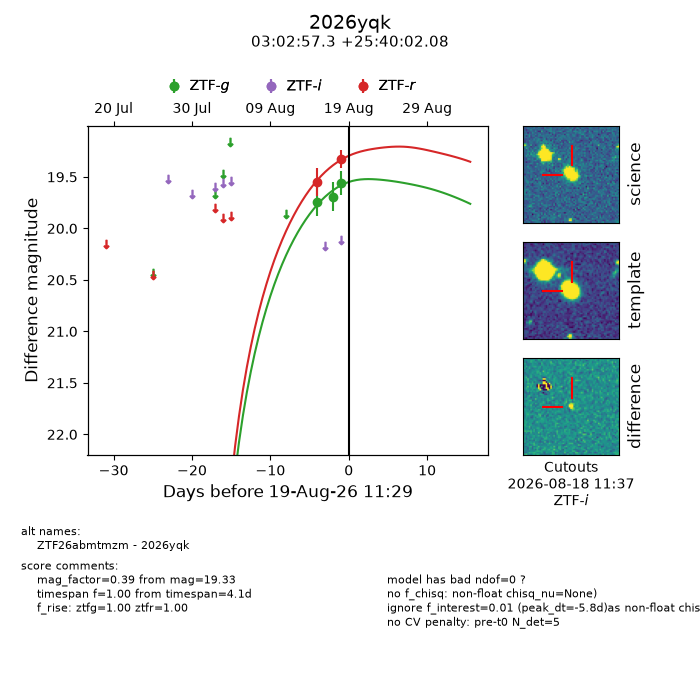
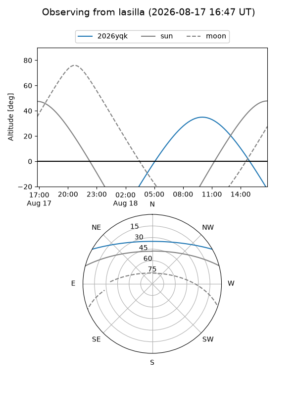
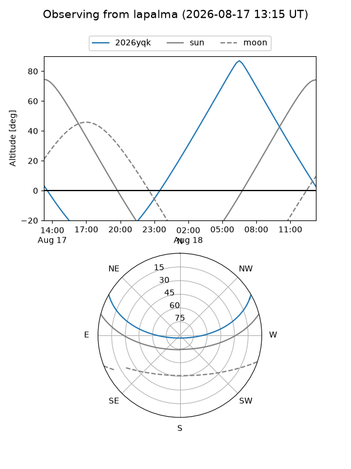
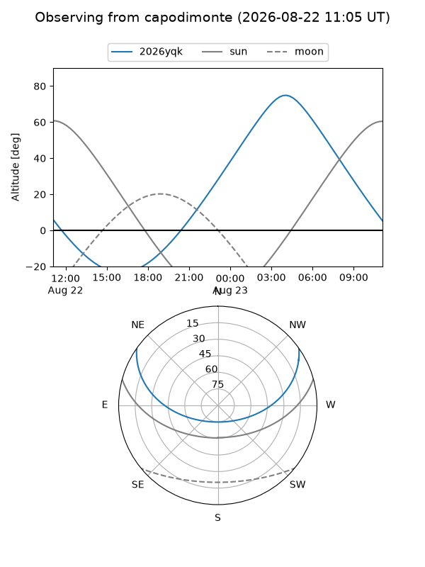
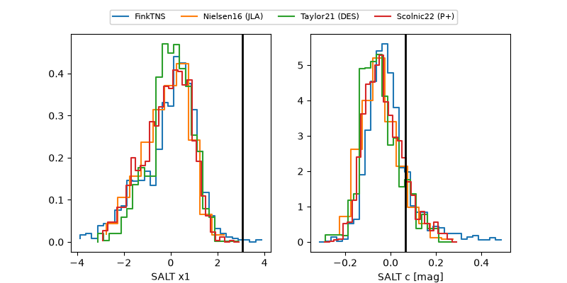

2026yqk
Target 2026yqk at 2026-08-19 11:32
Aliases and brokers:
FINK-ZTF: ztf.fink-portal.org/ZTF26abmtmzm
Lasair-ZTF: lasair-ztf.lsst.ac.uk/objects/ZTF26abmtmzm
ALeRCE-ZTF: alerce.online/object/ZTF26abmtmzm
YSE-PZ: ziggy.ucolick.org/yse/transient_detail/2026yqk
TNS name: wis-tns.org/object/2026yqk
Direct TNS query: direct search
alt names
ZTF26abmtmzm (ztf,fink_ztf)
2026yqk (tns,yse)
Coordinates:
equatorial (ra, dec) = 45.7389,+25.66724
equatorial (HMS+DMS) = 03:02:57.34,+25:40:02.08
galactic (l, b) = (156.7416,-28.43531)
Flags:
TNS type: nan
peak dt: -5.8
Photometry:
last ztfg=19.56, ztfr=19.33
3 ztfg, 2 ztfr detections
Lightcurve

Visibility



Additional plots
